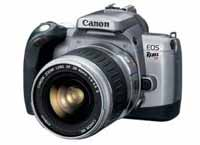

| Technook:
German-Made
KNOPPIX Provides Linux Fanatics A Choice
Contributed By: Mark Rufino
NEW TO LINUX ? Intimidated by its Command Prompt?
KNOPPIX,
a bootable German-made free and open source live Linux compact
disc, addresses these questions and more as the system provides
GNU/Linux software and desktop environments, automatic hardware
detection, and support for many graphics cards, sound cards,
SCSI (small computer system interface) and USB (universal
serial bus) devices and other peripherals. Knoppix does not
conflict with the operating system (OS) of the computer running
it, and it even displays a “beautiful graphical screen
(for users) to start with.”
Knoppix advocate Sacha Chua, an assistant instructor at the
Ateneo de Manila University, said this OS introduces people
to Linux in two easy steps: putting the CD into the computer
drive and booting it.
KNOPPIX IS FUN !
At the outset, Linux, Chua noted, projected the idea that
installation was hard and that trying it out could be very
intimidating because of its console. Knoppix easily dispels
this notion, even proving that “Linux is loads of fun,”
she said.
“If one is new to Linux and (one) wants to try out
a couple of (Linux) applications but is worried about screwing
up the computer, or one wants to install a new software in
the office computer but is not allowed to do so, one can use
Knoppix,” Chua said.
“In case you’re one (of those people) dragging
their heels in Linux as you do not know anyone who can help
install it, you don’t have any more excuses (with Knoppix
around),” she said, adding that this OS offers the convenience
and “full power” provided by Linux in one CD.
KNOPPIX IS A CHOICE !
“Knoppix is a way of testing the waters. One
can just try it out without actually posing a risk to one’s
computer,” she said.By opting to use Knoppix, Chua believes
schools will be able to allocate a bigger portion of their
budget for raising the salaries of teachers, improving facilities,
and buying more books instead of pouring a huge amount of
money on software.
“Software is really expensive,” she lamented.
“Thus, many people are doing the best they can (to make
it available for free).”
“The main thing that concerns me is that most people
do not know they have this choice,” she said. “I
do not care if they just use Knoppix every so often or they
(just) try it out and (then) move on to Red Hat or whatever
as long as they (know that they) have that choice.”
Source www.itnetcentral.com
--------------------------------------------------------------------------------------------------------------------
Digital
Single Lens Reflex (SLR) Cameras
By: Albert Gavino
This year, a lot of digital cameras have been released in
the market, For professional photographers or for those who
want much more quality from digicams, then this one is for
you, Canon has released its own line of digital SLRs ranging
from 5 megapixels to 8 megapixels, complete with aperture
values and shutter speeds the likes of a manual SLR.There
also other peripherals that can be bought seperately, flashes,
telephoto lenses, wide angle lenses, camera tripods.

TECHNOOK
FEATURE: EOS Rebel T2
Redefining
Rebel Again
The EOS Rebel T2 brings together everything you want in a
35mm camera. It has the latest automation, a "souped-up"
selection of powerful features, expanded shooting modes and
state-of the-art E-TTL II autoflash. It's what makes the Rebel
T2 the most advanced SLR in its class. A masterpiece of form
and function, its luxurious design is both lightweight and
ergonomic to make it truly user friendly. See for yourself,
why the Rebel T2 is a camera that will change your expectations.
Source: www.canon.com
|